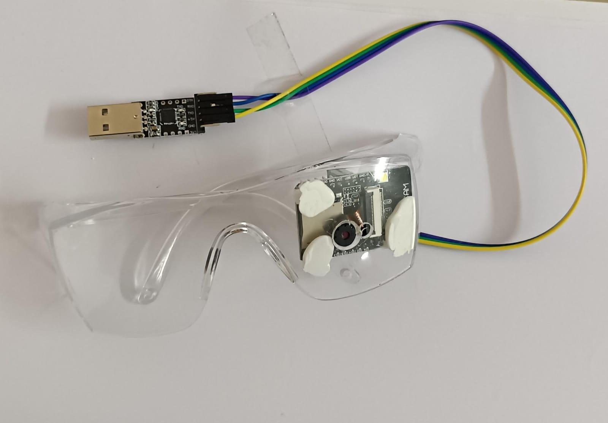
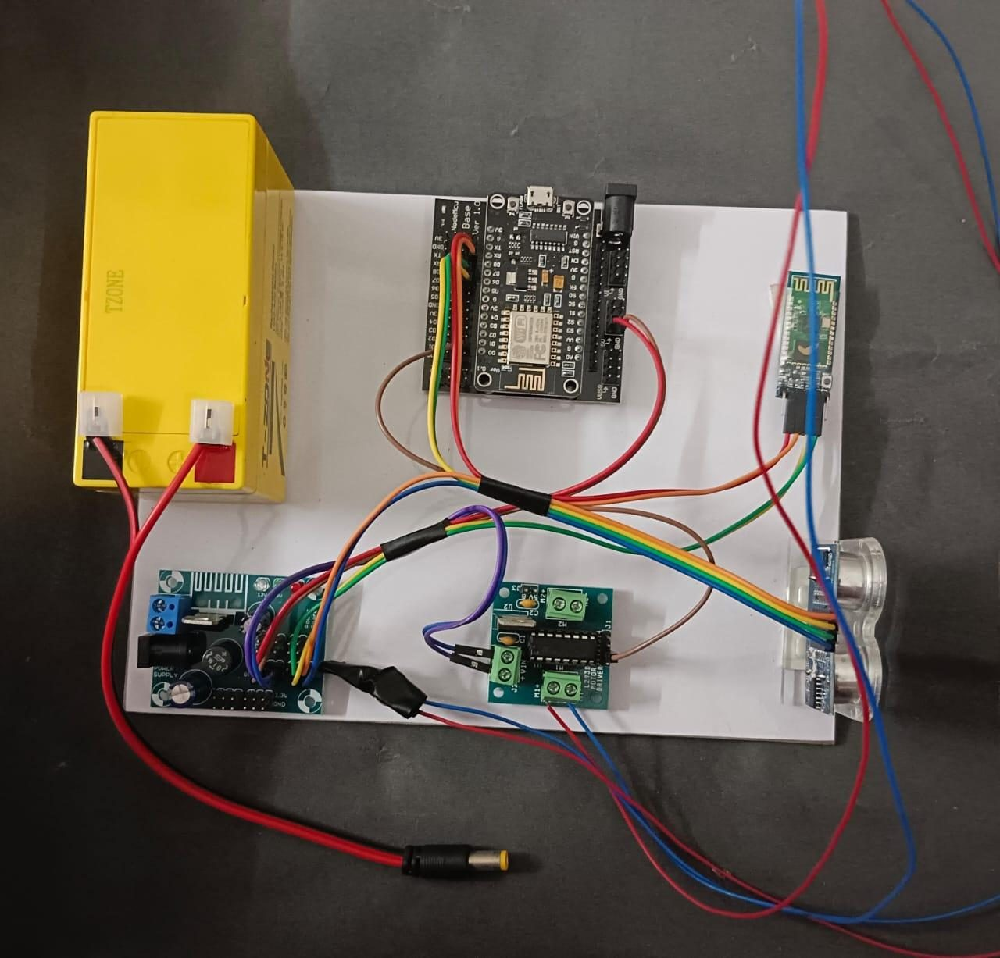

A smart glasses + smart cane system that detects objects, obstacles and landmarks in real time, then guides visually impaired users with voice instructions and haptic feedback — no unfamiliar environment required.
Visually impaired individuals face real obstacles navigating unfamiliar environments — traditional aids like the white cane offer basic contact detection but no real-time feedback, no landmark recognition, and no way to identify what's actually ahead. What's missing is a layer of live perception: object detection, obstacle identification, and spoken guidance, delivered the moment it's needed.
Synthetic Vision Synthesis pairs two wearables into a single assistive system. Smart glasses fitted with an ESP32‑CAM run the YOLOv3 object-detection algorithm to identify what's in front of the user and describe it through voice guidance. A companion smart cane carries ultrasonic sensors that continuously scan ground-level obstacles, alerting the user instantly through a vibration motor. Together, the two devices cover both eye-level and ground-level hazards — enhancing mobility, independence, and safety with accessible, real-time navigation assistance.
The detection loop that runs continuously while the system is worn.
The ESP32‑CAM on the glasses streams live images, while three ultrasonic sensors on the cane scan the ground ahead.
YOLOv3 processes each frame to identify objects and match them against a trained dataset of common obstacles.
The control unit weighs proximity and object type, deciding what needs to reach the user, and how urgently.
Voice playback names the object; the vibration motor fires within 0.2s for anything at ground level.

Detects and identifies objects in real time using the YOLOv3 algorithm running on an ESP32‑CAM module mounted to the frame.

Assists users in detecting obstacles at ground level, providing real-time feedback through haptic alerts as the system continuously monitors the surroundings.
The ESP32 doubles as a web server, so the system can be watched and configured remotely — not just worn.
Real-time streaming. Object-detection results, proximity alerts, and system status flow from the ESP32‑CAM and ultrasonic sensors straight to the webpage.
Adjustable settings. Users or caregivers can tune haptic feedback intensity and obstacle detection range directly from the interface.
AJAX / WebSockets. The page updates live rather than on refresh, so status shown is always what's happening right now.
Cloud logging. Historical data can be stored and analyzed in the cloud to improve performance over time.
Field-tested performance of the glasses and cane working together.
Users reported the system as intuitive and helpful for navigating unfamiliar areas, with the cane performing reliably in both low-light and noisy outdoor conditions.
Through Bluetooth, the smart cane can talk to a dedicated mobile app, giving caregivers or emergency services GPS-based real-time location tracking. The ESP32‑CAM can integrate with cloud servers for deeper analytics, real-time voice guidance can be routed to external speakers or earbuds for more discreet use, and the architecture leaves room for collaboration with accessibility organizations down the line.
Scored 1–5 across eight standard innovation parameters.
| Item | Cost (INR) |
|---|---|
| ESP32‑CAM (2 units) | 1,000 |
| Accelerometer (2 units) | 500 |
| GPS Module (2 units) | 1,200 |
| YOLOv3 Dataset | 2,000 |
| Battery (4 units) | 800 |
| Cane fabrication | 1,500 |
| Miscellaneous components | 1,000 |
| Mobile app development | 2,500 |
| Total | 10,500 INR |
Synthetic Vision Synthesis was selected for the final round of the prestigious MSME Hackathon, recognizing the potential and real-world impact of the team's assistive technology for visually impaired individuals.
By combining ESP32‑CAM, ultrasonic sensors, and the YOLOv3 algorithm, the system delivers real-time obstacle detection, navigation guidance, and haptic feedback to enhance independence and safety. With a scalable design and a focus on accessibility, Synthetic Vision Synthesis aims to transform how visually impaired individuals navigate their environments — promoting inclusivity and empowerment.